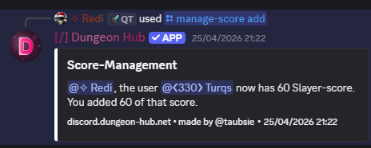

/manage-score add ✏️
Arguments
Name | Type | Description | Optional? | Additional |
|---|---|---|---|---|
| User | Member whose score to modify. | ❌ No | — |
| Autocompleted String | Identifier of the carry type. | ❌ No | Max length: 30 |
| Integer | Score amount to add. | ❌ No | Min: 0, Max: 10000 |
Examples

Notes
When configured, a log is posted to the
SCORE_LOGS_CHANNEL.Relevant static leaderboard messages are updated automatically.
The carry type must exist and be configured on your server.
Score is typically awarded automatically via /log; use this command for manual adjustments only.
If the
SCORE_MANAGEMENT_ROLEserver property is configured, users must have that role in addition to theManage Messagespermission to use this command.
See Also
/manage-score: Overview and permission details
/log: Automatic score logging
/score: View current scores